is it all i am all it is
a one-sided conversation about me
to you.
my name is
.do you remember me? did i apply to a job you posted? did you see a project i made online, or in a show?
are you a friend, or do you want to be? maybe i could just ask if this is a personal visit, or if it's something work-related. either way it goes,
does it bother you that the title isn't a palindrome? email with your feedback
i studied design & technology at parsons school of design, and will be graduating in the spring of 2017. i live in brooklyn, new york. i'm 24. i like making things that are electric. i really like to code. you can see my resume here.
you can email me at johnnyddunn@gmail.com.
i mostly do full stack development, and am interested in working in areas like AI (machine learning, natural language processing), data visualization, virtual / augmented reality, game design, information security, penetration testing, social media, digital privacy, and wearable technology.
i also like journalism, photography, film, design, writing, and creating and playing music.
Photo work (and some design)
most of my personal projects are open-source, and on github with docs (or not with docs).
i also made:
year 2017 (and some of 2016)
Emote
Emote was written in Python and uses the TextBlob / NLTK, NumPy, SciPy, pandas, and scikit-learn libraries to build a probabilistic sentiment analyzer for 26 different classifications. These classifications have been divided into 13 pairs of opposites, and are designed to be grouped together to create tone clusters that can then encompass more values as well as decrease false positives. Based off these tone clusters, a further 10 additional tone classifications are derived, allowing for 36 different tones to be detected.
Emote has a web interface built in Flask and with Bootstrap.
Emote has a mass analysis feature for analyzing CSV data.
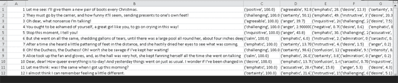
Emoter
Emoter is a basic but functional chatbot platform intergrated with Emote (also in Python), in order to give chatbot agents the ability to empathize with users and give back emotionally appropriate responses. Emoter agents thus can operate on a "higher level of thinking", by first categorizing messages and then choosing specific, interchangable "conversations" (lists of text responses) to respond from based on certain emotional tones. Within these conversations, Emoter looks for matching text in its database and compares it with the user input on a sliding threshold, outputting the corresponding response if the threshold is met.
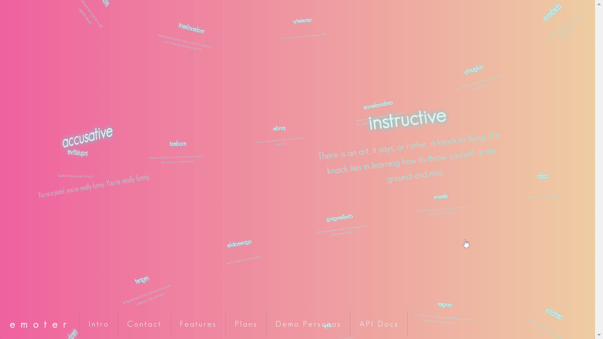
Emoter's website was created with three.js and SemanticUI. The globe displays quotes that have been classified according to Emote.
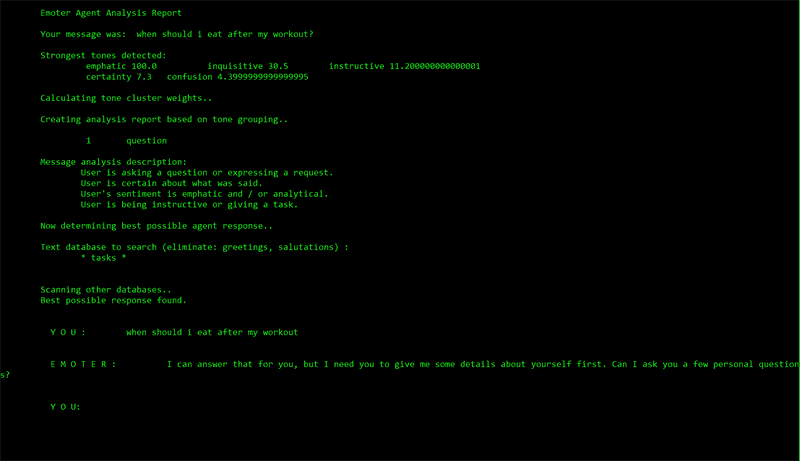
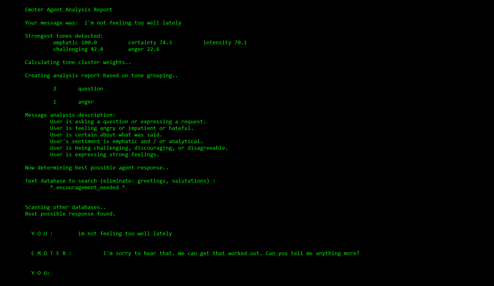
A demo 'Emoter agent' with a persona of a fitness coach.
In Emoter's training data, values can be passed after the matching input-response pair, and checked for before Emoter gives out a response. In my interactive fiction game Eden, I used this to allow for a branching narrative to continue driven by the mechanic of talking to a mysterious character in the game. The Emoter bot was able to keep track of whether or not certain things were said by the user previously, and how often each thing was said. Thus, Emoter has a basic short-term memory in store, so that the bots can carry out an intelligent, coherent conversation (as opposed to Cleverbot, which cannot carry on with the same conversation).
Both Emote and Emoter can be run offline. Emoter has also been open-sourced, and is included with Emote's source code.
Eden
Eden is an interactive fiction game with a morality-based storyline, incorporated with Emoter, the chatbot, to use conversations as the player interaction to drive the branching narrative. Currently the game is built entirely in Python, and played through a command line interface. An online website to play the game will be created as part of my final thesis demo. Eden will also be open-sourced further on.
The game begins with a someone named Charles waking you, and asking you what you were thinking about. The only player interaction is what you say to Charles. As your conversation develops, the story unfolds and character actions are done and described automatically. This is meant to be a story driven by the visual imagery of the writing, as well as the dialog.
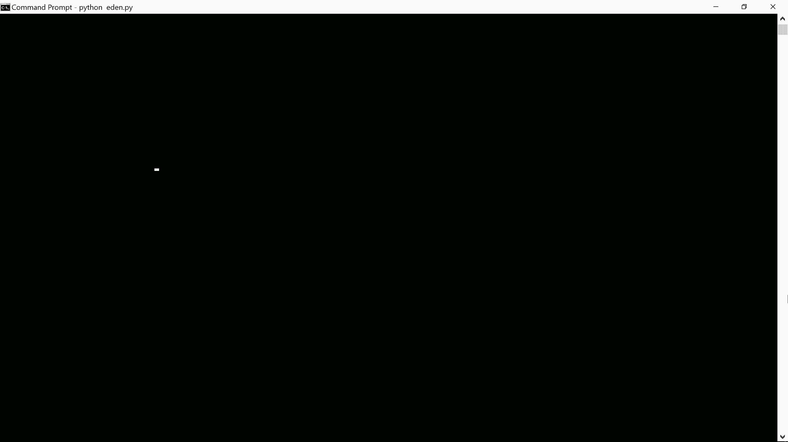
You can choose to continue questioning why you're here and what you're doing, or you can just follow along with what Charles says to a game end. You can also refuse to go with Charles. There are four paths to four possible endings.
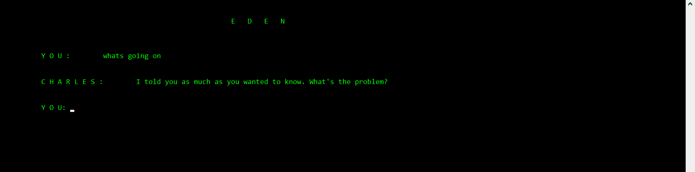
Eden keeps track of things you said in the game as items, and thus is able to be a branching narrative with different paths, because the Charles technically does have some basic memory of the conversation.
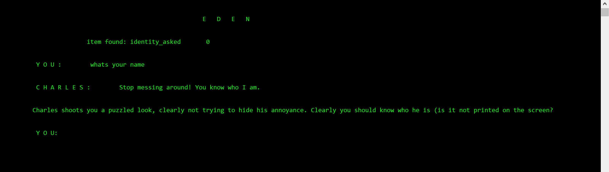
Dreamgazer
Dreamgazer is a mostly conceptualized VR / AR, EEG, tDCS (transcranial direct current stimulation) designed to be 3D printed and then hand-assembled. Dreamgazer's software was planned to be intergrated with an AI (Emoter) that would train users to dream, and guide them through their dreams vocally by talking and responding to biofeedback.
Lucid dreaming in wearable tech is something I will continue exploring, but it may be a long time before I get around to making any more iterations of Dreamgazer. I have plans to open-source the early software, as well as the 3D printed plans.
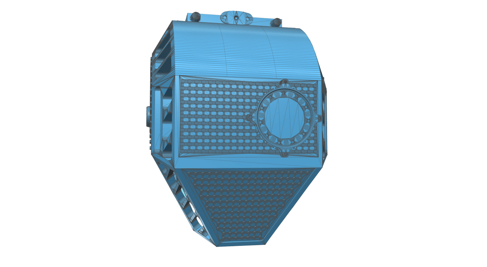
The plans were made to be fully functional, with the proper materials and construction once printed.
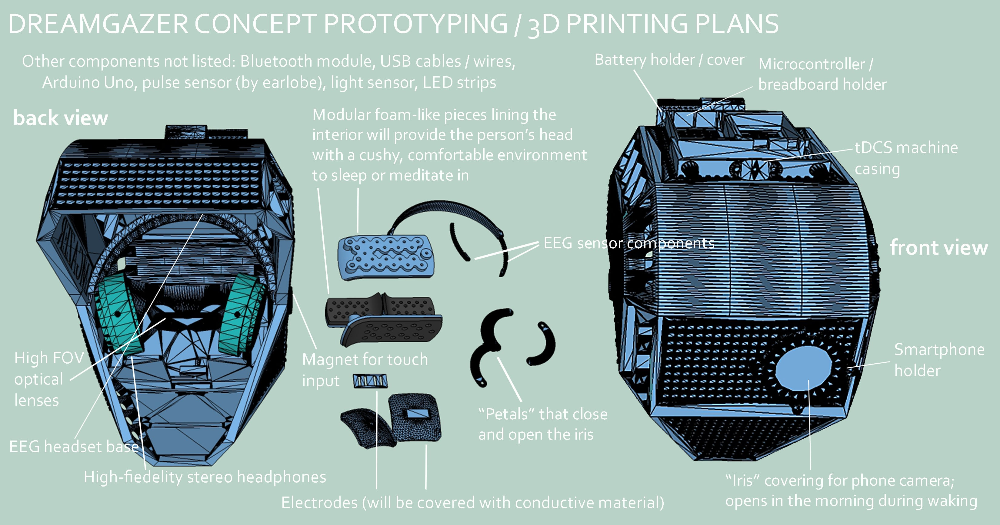
Dreamgazer was designed with a VR interface, in Unity.

The full process of Dreamgazer's functionality.
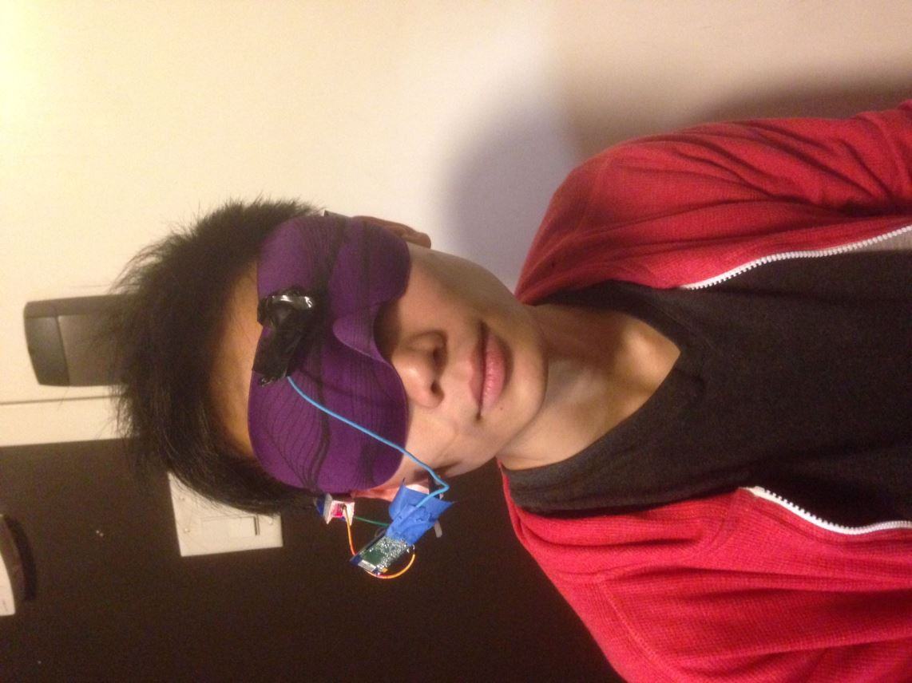
In 2015, I made a wearable prototype to induce lucid dreaming using an Arduino, a pulse sensor, the NeuroSky MindWave (EEG), and Processing (for software).
I was able to detect when I fell asleep within an accuracy of five minutes, and was able to successfully induce lucid dreaming by playing music when REM sleep was detected.

.png)
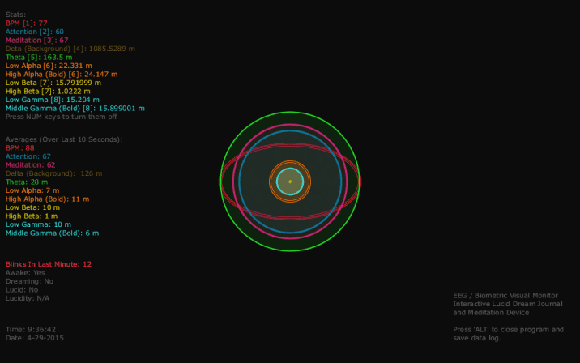
VR Data Visualization of Miami Tourism (Unity)
Map of the Prologue of the Interactive Fiction Game 'Creatures Such As We' (D3.js).
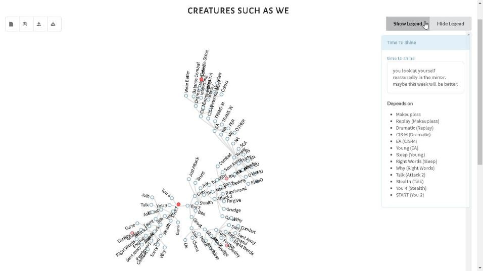
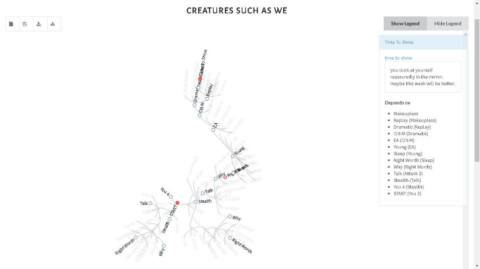
year 2016
Stopwatch
StopWatch is a web app that automatically goes through curated content from YouTube based off of the emotional states detected in the viewer by the webcam, utilizing the Affectiva SDK. Made with Bootstrap and jQuery.
If positive feelings are detected in the viewer, then the current video in the playlist continues playing. If it reaches the end, then the most similar video found on YouTube to the video is played next. If negative emotions are detected, then the current video is skipped, and the next video in the randomized playlist of 50 videos (generated from keywords specified by the user) is played.
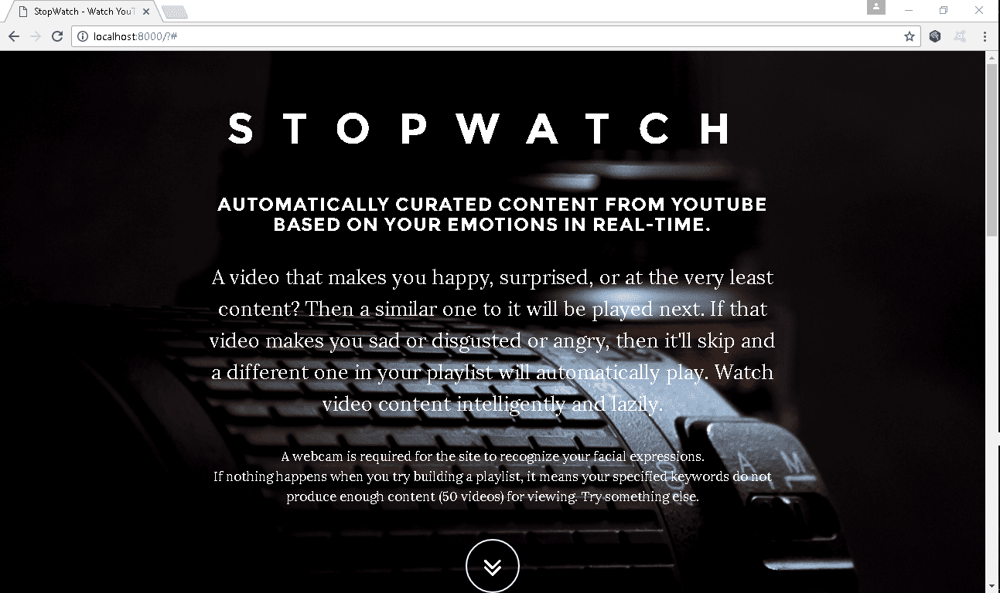
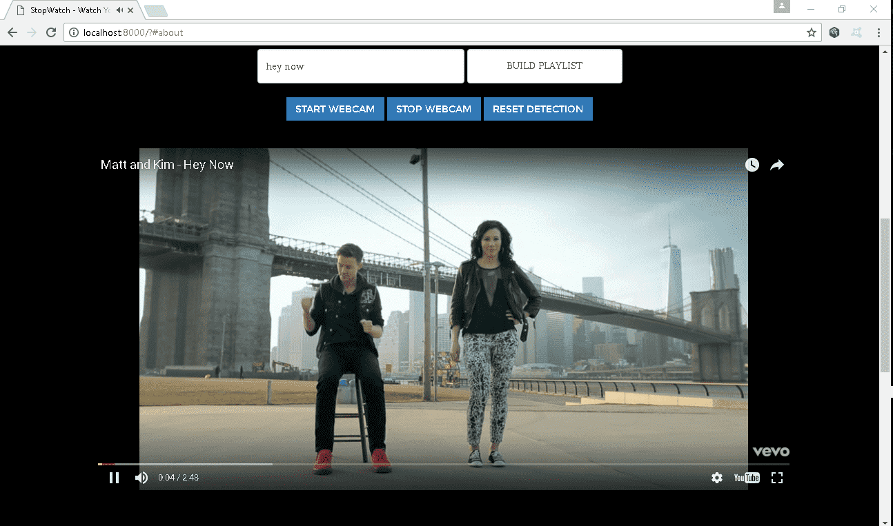
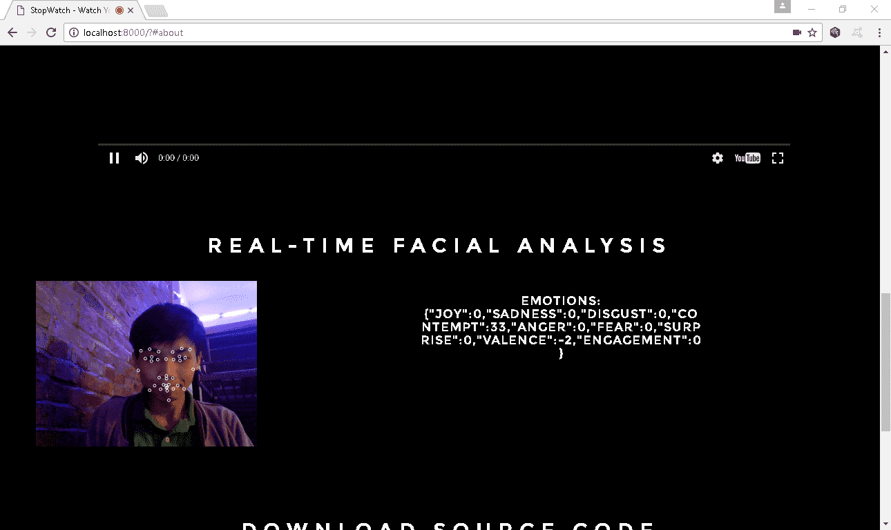
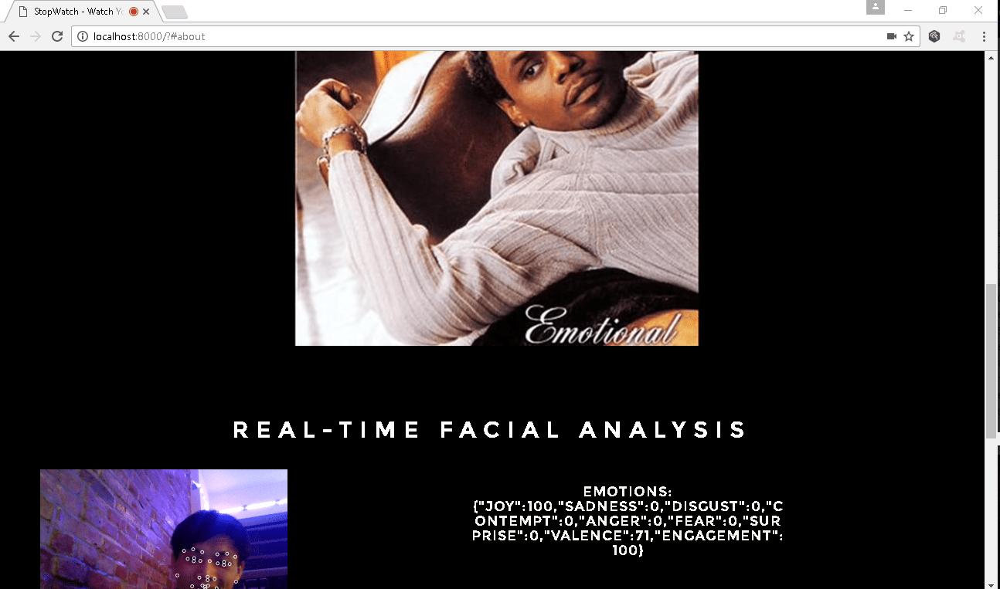
Freewriter
A clean, minimal text editor made in P5.js that lets you instantly scramble / unscramble all the text saved on the page, allowing you to easily keep other people from seeing what you're writing. Cipher keys of any length and combination can be used to decrpyt messages at a later time, or real-time cryptography can be enabled, with the oscillating ball-based UI.
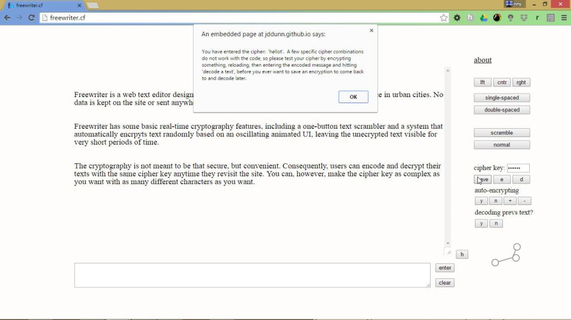
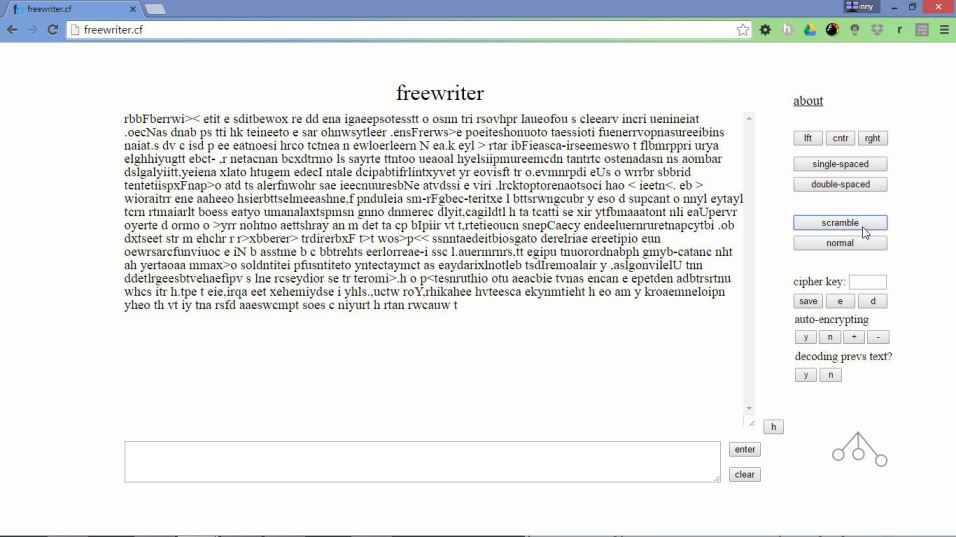
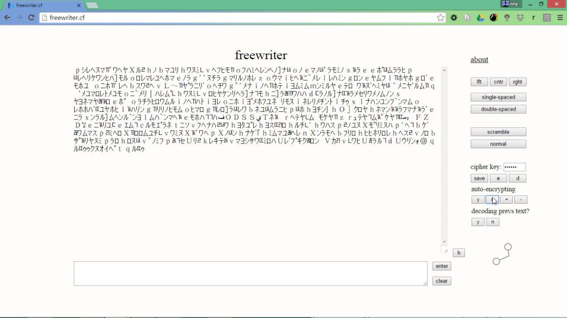
Who got hacked on Twitter?
A tool that puts tweets from a Twitter widget on display in a clear, stylized way on the web, starting with the first tweet and changing to the next every 3 seconds. After every minute (Or however long you change it to in the code), the most recent tweets reload again.
Twitter might be one of the best platforms for getting real-time data. It has a massive scale and audience that's generally tech-savvy, and it is the most immediate source of news and sharing out there. So how can we use Twitter for our benefit in research?
I developed this while trying to think of a way to gather some practical, direct research on how prevalent invasions of digital privacy, aka "hacking" is in today's connected society. I thought, what better way than to mine Twitter? Set your widget ID and put the page on display, and study what the people have to say real-time in a visually appealing, convenient manner.
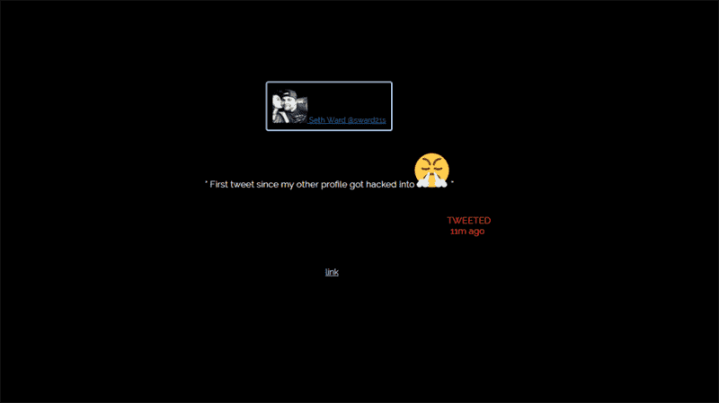
The Web - The Film (Sample)
A five minute feature of a proposed documentary about hacking, digital privacy, Internet culture, and online relationships / communication. The film was planned to have a non-linear story, and and be told like a series of vignettes, with interviews from a variety of sources, including online gamers, individuals in e-relationships, and professionals in the security industry. This footage was made as as a sample of what the final film would look and feel like. No plans have been made to complete the film or the script for The Web.
Conversation-starter garment
An interactive garment that radiantly lights up when sound gets above a certain level, and remains glowing only when sound is not just continuing, but getting louder as well. After a certain point, the sound tolerance level is too high, and the top turns off, and the sensors and process resets itself, effectively continually promoting conversations around the garment for it to be lit up. This was created in collaboration with fashion student Alex at Parsons, who created the dress out of fiber optic material.
Gleasons VR (A Short 360 Documentary)
For this piece, I worked with three other classmates in my VR Journalism class, and was co-leading / co-directing / co-interviewing / co-producing, and was also the cinematographer, editor, and sound designer as well. We chose to film a 14-year-old boxer named Chris, and focus on his dedicated relationship with his coach / trainer, Misel, following their training sessions for a few weeks leading up to a scheduled match.
I wanted to take the direction of the video with various creative liberties, experimenting with the medium of 360 film, by doing things like having a jump cut during the boxing match and including a moving handheld POV action shot. I used Adobe Premiere and the Mettle plugin suite to edit, and filmed on two Samsung Gear 360 cameras. The version currently available is low-res and watermarked, and will be replaced with an unwatermarked, final version (after acquiring a license for Mettle, which will be soon).
year 2015
Sonance - Virtual Noise Isolation with ASMR
Sonance is a cross-platform app that immerses users in dynamic soundscapes designed to mimic real life environments, such as a serene forest / river, that actually act as a tool for noise isolation, as the type and volume of sounds adjust with the level of volume detected in the user's environment. These soundscapes are also designed with ASMR (autonomous sensory meridian response) in mind, meaning that the sounds are meant to relax you and can actually trigger pleasant physical tingling sensations in the head, also greatly promoting relaxtion.
Solitary - An Abstractified Audio-Visual Experience Based on Solitary Isolation
An audio-visual experience made in Unity about the dark and disorienting experience of solitary confinement (created for a journalism class focusing on Rikers Island in NYC). Made in Unity, SOLITARY is meant to be projected in a large, dark room with surround sound speakers, while the participant stays in the room, alone and with no other possessions, for as long as possible until he can stand the frustration, isolation, and hallucinatory nature of the experience no longer, and chooses to leave.
At the end, every participant marks his time log in a record inside the room, with his name and duration of stay public for others to see (almost like a leadership board). Intense, abstractified graphics were created to represent the soundscape (rather than creating a CGI room of the solitary cell) to promote the idea of solitary confinement being a mentally deterioating experience. The graphics were done in collaboartion with Alex Addington-White.
year 2014